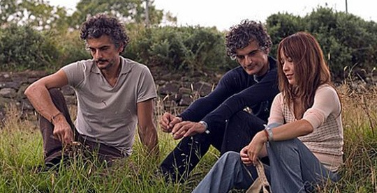

（乐队资料：Blonde Redhead成立于1993年，由日籍女歌手Kazu Makino和来自意大利的孪生兄弟Amedeo Pace & Simone Pace所组成。乐队刚出道时由于其嘈杂刺耳的吉他声,密集的编曲，于是，乐队的风格被定义为no-wave，噪音摇滚。在2000年后，乐队进入了沉寂期。时隔四年，他们竟以4AD旗下乐队的身份发行了名为
总之BLONDE REDHEAD已经走入了巅峰时期，底下有我们一群仰头等待的忠实FANS。乐队今年的新专辑《23》想怕会是很多人的年度10大首选。妖娆，耽美，等新热词汇也将随着BLONDE REDHEAD等乐队被更多地带入以后歌迷的耳中，就象当下泛滥的INDIE一样。